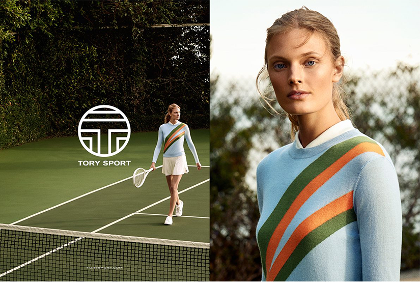
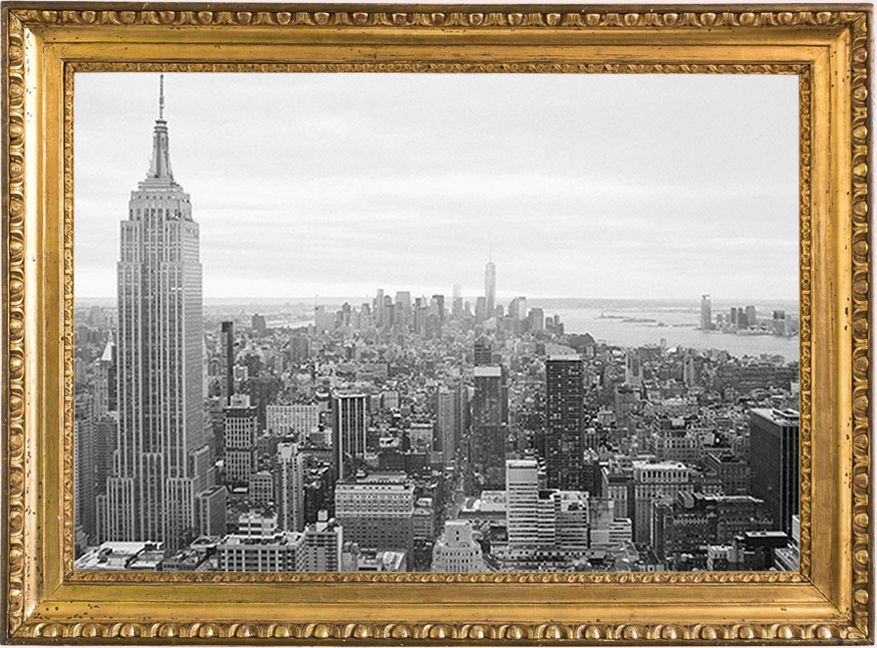
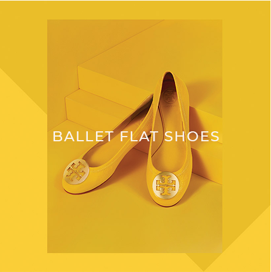

Tory Burch는 아메리칸 라이프스타일 브랜드로, 회장 겸 CEO이자 디자이너인 Tory Burch의 스타일과 감성이 드러나는 브랜드입니다.
Tory Burch는 2004년 2월에 론칭 되었으며, 색상, 프린트, 다채로운 디테일이 특색인 Tory Burch의 컬렉션은 기성복, 핸드백, 액세서리, 뷰티, 홈 제품, 손목시계로 구성되어 있습니다.
예술, 음악, 여행, 인테리어와 더불어 디자이너의 스타일리시한 부모님이 모두 Tory Burch 컬렉션의 영감이 되었습니다.
우리 회사가 성장함에 따라 저는 가정의 균형에서부터 재정 문제에 이르기까지 비즈니스로 부터 직면한 장애물에 대해 배웠습니다.
그래서 저는 제가 경험한 것들을 토대로 자신의 아이디어를 통해 자신감을 가지기 위해 필요한 비즈니스 네트워크 및 교육이 부족해 어려움을 겪는 이들을 도와주기 위해서 2009년 우리는 여성 기업가의 권한 부여를 지원하기 위해 재단법인 재단(Tory Burch Foundation)을 설립했습니다.
자본 지원
Capital BANK OF AMERICA의 프로그램은 COMMUNITY LENDERS를 통한 저렴한 대출에 대한 액세스를 제공합니다.
기업가 정신
GOLDMAN SACHS의 10,000 개의 중소기업 프로그램과의 파트너십은 여성 중소기업 소유자에게 비즈니스 및 경영 교육을 제공합니다.
멘토링 및 네트워킹 기회
우리 재단은 조언자의 역활로써 여성들을 비즈니스 리더 및 기업을 성장시키고 화장하고자하는 다른 기업과들과의 네트워크 형성의 기회를 제공합니다.

HISTORY
2015
TORY SOPRT 라인 출시
2012
TORY BURCH 최초의앱인 TORY DAILY 론칭, 블로그 콘텐츠, 독점 판매 상품 및 무료 배송 제공
2013
Estée Lauder와 함께 향수 및 뷰티 캡슐 컬렉션 출시
홈 컬렉션 론칭
2014
Tory Burch 10주년 향수 및 뷰티 컬렉션, 시계 론칭
‘Tory Burch In Color’ 출간

2011
뉴욕 맨해튼 매디슨 가에 Tory Burch 최대 규모의 플래그십 매장 오픈
2012 SS 컬렉션으로 첫 런웨이 쇼 진출
2008
CFDA(미국 패션 디자이너 협회) 올해의 액세서리 디자이너 상 수상
2009
美 여성기업가 및 여성기업가 가족의 경제권 강화를 위한 Tory Burch 재단을 설립 Tory Burch 최초의 해외 플래그십 매장 오픈
2010
Luxottica와 협업, 아이웨어 컬렉션 론칭
Tory가 포브스 誌에서 발표한 ‘세계에서 가장 영향력 있는 여성’에 선정됨

2010
Tory가 자신의 어머니의 이름을 따 온 대표상품, 리바(Reva) 발레 플랫슈즈 첫 출시